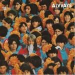
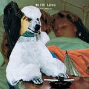
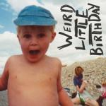
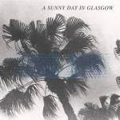
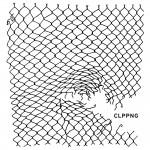

Music Reviews
-
La Roux Trouble in Paradise
Five years in the making, Elly Jackson single-handedly releases La Roux's sophomore effort, Trouble in Paradise. It's the sound of mixed emotions and good times..
Luiza Lodder likes what she hears... -

Slow Club Complete Surrender
Sheffield duo Slow Club release their first LP for the Universal subsidiary, Caroline International, after two albums with the independent Moshi Moshi. Does this mean a move to the big leagues?
Joe Rivers surrenders, if not completely... -

Alvvays Alvvays
Lead by likable vocalist Molly Rankin, the young Tonronto foursome's debut effort perpetuates the longstanding tradition of tapping into the vast compendium of reverb-soaked indie pop.
Juan Edgardo Rodríguez reviews... -

PS I Love You For Those Who Stay
On Meet Me At The Muster Station and Death Dreams, PS I Love You were tied together with a manic sound. On their latest effort, For Those Who Stay, the group seem to move in a slightly different direction, but do they pull it off?
Andrew Ciraulo will certainly be staying around for this one... -

White Lung Deep Fantasy
Deep Fantasy, the third album from Vancouver punk band White Lung, strives to gratify listeners through hooks and immediacy. But, that's about it.
Sean Caldwell reviews... -
Sia 1000 Forms of Fear
Sia might be pop music's most unique voice in a while, and she's got the album to show it off.
Luiza Lodder reviews... -

Happyness Weird Little Birthday
London trio Happyness dropped a superb debut EP at the turn of the year, showcasing a highbrow adaptation of the US slacker rock motif. The debut LP fulfills the promise and then some left by the EP, with a lyrically exceptional, quietly intelligent and hugely uplifting record.
Carl Purvis reviews... -
Phox Phox
Fleet as Fleet Foxes, foxy as Foxygen, newcomers Phox bring their own style (and spelling) to mellow indie rock. They're abuzz in the blogosphere, but will the sextet's eponymous debut see them phlounder or phly?
Ben Jones reviews... -

A Sunny Day in Glasgow Sea When Absent
A Sunny Day in Glasgow have never been known to gently play by dream pop's rule book, but even as they tighten things up with Sea When Absent, their latest is still stuffed with playful, exuberant ideas that makes each track a thrill.
Peter Quinton reviews... -

clipping. CLPPNG
Experimental hip-hop trio clipping. combine rap with the avant-garde underground (noise and musique concrète) - but despite deft technical proficiency, they fail to carve out their own niche.
Stephen Wragg reviews...